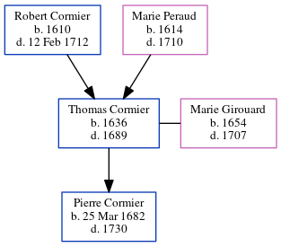

Thomas Cormier 1636 - 1689
[ Home ] | [ Calendar ] | [ Surnames Index ] | [ Census Index ] | [ Family History ]The child of Robert Cormier and Marie Peraud, Thomas Cormier, the 9 times great-grandfather of Michele Copp (née Phillips), was born in La Rochelle, Manche, Basse-Normandie, France in 16361 and married Marie Girouard (with whom he had 1 child, Pierre) in Po in 16681.
He died in 1689 in Beaubassin, , New Brunswick, Canada.
Parents
- Robert was born in 1610
- Marie was born in 1614
Children
- Pierre was born on Mar 25, 1682
Citations
- U.S. and International Marriage Records, 1560-1900 Online publication - Provo, UT, USA: The Generations Network, Inc., 2004.Original data - This unique collection of records was extracted from a variety of sources including family group sheets and electronic databases. Originally, the information was deriv
Family Tree
Generated by ged2site. Last updated on Jun 6, 2024